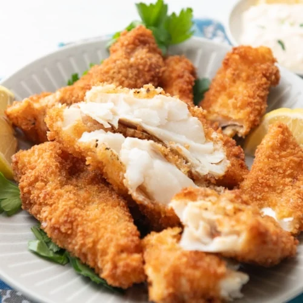

Home
Fried Chicken Breast Cutlets

Chicken cutlets are thin pieces of boneless chicken, either sliced from a thick breast or pounded thin.
Fried chicken cutlets are a delicious main dish, a topping for pasta or salad, or a filling for a sandwich.
Using thin cutlets makes a fast and easy dish that's ideal for a weeknight.
Unless the boneless chicken breast halves are quite small, slice them horizontally to
make cutlets. Two or three large chicken breast halves might be plenty for four servings.
If your chicken breasts are quite small, use four and flatten them to an even thickness before cooking.
If desired, swap out the Cajun seasoning for a seasoning mix of your choice. Some tasty options
include Greek spice mix, Italian seasoning, or a Mexican blend.
Ingredients
- 1 large egg
- 3/4 cup milk
- 1 to 2 tablespoons hot sauce (such as Frank's RedHot, Texas Pete, or Tabasco)
- 1 cup all-purpose flour
- 1 teaspoon Cajun seasoning (or a similar blend), preferably salt free
- 1 teaspoon kosher salt (or 1/2 teaspoon if the Cajun seasoning contains salt)
- 1 teaspoon ground black pepper
- Vegetable oil (canola, or peanut oil), for frying
- 2 large boneless, skinless chicken breasts, sliced in half lengthwise (or 4 small chicken breasts), lightly flattened
Steps
- Gather the ingredients.
- In a large bowl, whisk the egg, milk, and hot sauce together.
- In a wide, shallow bowl, combine the flour, Cajun seasoning, salt, and pepper.
- In a large, heavy, deep skillet or Dutch oven, heat about 1 inch of oil to 350 F/180 C/Gas Mark 4. Preheat the oven to 200 F if you are not serving the chicken cutlets immediately or if you are doubling the recipe and are cooking in batches.
- When the oil is hot, dip a chicken cutlet in the egg and milk mixture, coating both sides. Let excess drip off, then coat with the flour mixture. Carefully lower the coated chicken into the hot oil. Adjust the heat as needed if the oil gets too cold or hot. Repeat with the remaining pieces.
- Fry the chicken for about 3 to 5 minutes on each side, until browned and cooked through.
- Drain the chicken on layers of paper towels or brown paper bags. Once the oil returns to temperature, repeat with the remaining cutlets.
- Serve immediately or transfer to a large baking sheet and keep warm in a 200 F oven or warming drawer. Enjoy.